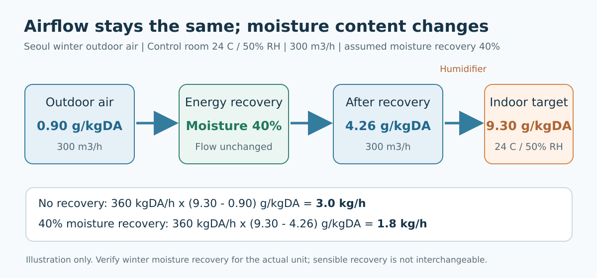
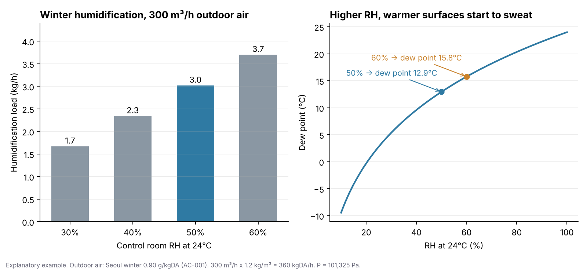

후배가 실별 설계조건표를 만들어 왔는데, 모든 실의 난방 칸에 “21℃ / 50%”가 적혀 있다고 해볼게요. “냉방도 50%니까 겨울도 50%로 맞췄습니다.” 성실하게 채운 표입니다. 그런데 이 표대로라면 사무실, 탕비실, 탈의실마다 가습기가 들어가야 합니다. 오늘은 겨울 습도를 어느 실에, 왜, 얼마로 적는지 정리해보겠습니다.
지난주에는 바깥 공기(AC-001)와 실내 온습도(AC-003)를 정했습니다. 오늘은 그중 겨울 습도 하나를 따로 떼어 봅니다. 숫자 하나지만, 적는 순간 설비가 따라오는 칸입니다.
먼저 결론부터 말씀드릴게요
- 겨울 가습은 원칙적으로 중앙제어실류에만 적용합니다.
- 중앙제어실의 겨울 목표 습도는 24℃ / RH 50%입니다. 이때 수분비는 약 9.3g/kgDA, 이슬점은 약 12.9℃입니다.
- 사무실, 탕비실, 탈의실, 화장실, 기계실, 전기실은 겨울 RH를 적지 않습니다.
- RH 50%는 법이 정한 값도, 모든 DCS가 요구하는 값도 아닙니다. ASHRAE가 제시하는 제어실 범위 30~65% 안에서 고른 회사 설계 목표값입니다.
- 실제 설치되는 DCS·전자장비 제조사의 습도 조건이 더 엄격하면 그 조건이 우선입니다.
| 실 용도 | 냉방 RH | 겨울 RH | 겨울 가습 |
|---|---|---|---|
| 중앙제어실 | 50% | 50% | 적용 (CTH 등 가습 기능 장비) |
| 중요 제어장비·전자장비실 | 50% 기본 | 50% 기본 검토 | 제조사·프로젝트 조건에 따라 |
| 사무실·크레인 제어실 | 50% | — | 미적용 |
| 탕비실·간이주방 | 50% | — | 미적용 |
| 탈의실 | 60% | — | 미적용 |
| 화장실·기계실·전기실·발전기실·창고 | — | — | 미적용 |
냉방 RH와 겨울 RH는 다른 종류의 숫자입니다
같은 “50%”로 보여도 하는 일이 다릅니다.
- 냉방 RH는 냉방 잠열을 계산하기 위한 실내 수분 조건입니다. 여름에 외기에서 수분을 얼마나 빼야 하는지 정하는 입력값입니다.
- 겨울 RH는 “겨울에도 이 습도를 실제 설비로 유지하겠다”는 성능 조건입니다.
그래서 냉방 RH가 50%라고 겨울 RH가 자동으로 50%가 되지 않습니다. [별표 8]도 마찬가지입니다. 사무소의 “50~60%”는 냉방 조건 열에 있는 값이고, 표에는 난방 습도 항목이 따로 없습니다. 이 범위를 가져와 “겨울에도 사무실을 50~60%로 유지해야 한다”고 읽지 않습니다.
겨울에 공기를 데우면 왜 건조해질까요
겨울 바깥 공기는 수분 자체가 적습니다. 서울 겨울 설계외기의 수분비는 약 0.90g/kgDA입니다(AC-001 확정값). 이 공기를 24℃까지 데워도 수분은 그대로입니다. 그런데 따뜻한 공기는 담을 수 있는 수분이 훨씬 많아서, 상대습도는 한 자릿수까지 떨어집니다.
그래서 중앙제어실의 겨울 목표를 50%로 정하면 부족한 물을 kg/h 단위로 보충할 설비가 필요합니다. 이때 RH만으로는 계산할 수 없고, 실내와 외기의 수분비 차이로 계산합니다.
가습량 ≈ 건공기 질량유량 × (실내 목표 수분비 − 외기 수분비)
외기 300㎥/h로 따라가 보겠습니다.
- 공기량을 질량으로: 300 × 1.2 = 360 kgDA/h
- 수분 차이: (9.3 − 0.90) ÷ 1,000 = 0.0084 kg/kgDA
- 가습량: 360 × 0.0084 ≈ 3.0 kg/h
시간당 물 3리터를 공기에 넣어야 한다는 뜻입니다. 이건 외기만 본 예시이고, 실제로는 침기, 문 개폐, 공조 계통 구성까지 넣어 확인합니다.
전열교환기가 있으면 어떻게 달라질까요
위 3.0kg/h는 바깥 공기를 그대로 들이는 조건입니다. 중앙제어실 공조계통에 수분을 회수하는 전열교환기가 설치된다면, 배기의 수분 일부를 들어오는 외기에 돌려줄 수 있습니다.
여기서 흔한 오해가 하나 있습니다. 전열교환기가 있다고 외기 풍량이 줄어드는 게 아닙니다. 들어오는 공기의 양은 그대로이고, 그 공기의 습기비가 높아질 뿐입니다.
회수 후 공급공기 습기비 = 외기 습기비 + 수분 회수 효율 × (배기 습기비 − 외기 습기비)
수분 회수 효율이 40%라면 같은 예시가 이렇게 바뀝니다.
- 공급공기 습기비: 0.90 + 0.40 × (9.3 − 0.90) = 4.26 g/kgDA
- 가습량: 360 × (9.3 − 4.26) ÷ 1,000 ≈ 1.8 kg/h

이때 꼭 지킬 것이 있습니다. 온도 회수율(현열 효율)을 수분 회수에 쓰지 않습니다. 현열 효율 70%를 이 예제에 잘못 적용하면 가습량이 약 0.9kg/h로 계산됩니다. 장치 사양서에서 동절기 수분(잠열) 회수 성능을 따로 확인하고, 현열 교환기처럼 수분을 회수하지 않는 형식이면 회수 효율을 0으로 봅니다. 위 40%도 특정 제품의 동절기 확정 성능이 아닌 설명용 수치입니다.
왜 하필 50%인가
ASHRAE Handbook—HVAC Applications의 「Power Plants」 장은 중앙제어실·제어장비실의 실내조건으로 냉방 24±1℃, 난방 22±1℃, RH 30~65%를 제시합니다. 그 범위 안에서 어디를 고를지 보겠습니다.
| 24℃에서 RH | 수분비 | 이슬점 | 의미 |
|---|---|---|---|
| 30% | 5.5 g/kgDA | 5.4℃ | ASHRAE 범위의 저습 쪽 |
| 40% | 7.4 g/kgDA | 9.6℃ | 중간 |
| 50% | 9.3 g/kgDA | 12.9℃ | 채택 |
| 60% | 11.2 g/kgDA | 15.8℃ | 고습 쪽 |

낮은 쪽으로 가면 가습기와 물, 에너지가 줄어듭니다. 대신 장시간 앉아 있는 운전원의 피부·눈·점막이 건조해지고 정전기에 불리할 수 있습니다. ASHRAE Standard 55도 열쾌적만으로 하나의 최소 습도를 정하지는 않지만, 아주 낮은 습도에서 생기는 이런 비열적 불편을 언급합니다.
높은 쪽으로 가면 가습량이 커지고, 무엇보다 이슬점이 올라갑니다. 60%에서는 이슬점이 15.8℃라서, 표면온도가 16℃보다 낮은 창호, 외벽 열교부, 외기에 면한 덕트와 배관부터 결로를 걱정해야 합니다. 미국 EPA의 일반 실내 수분관리 자료도 실내 RH를 60% 미만, 가능하면 30~50% 정도로 두라고 권합니다. 발전소 제어실의 설계 기준은 아니지만, 고습 쪽 위험을 이해하는 보조 자료로 봅니다.
그래서 저습과 고습 어느 쪽에도 치우치지 않고, 하나의 제어 설정값으로 쓰기 쉬운 50%를 골랐습니다. 50%에서 10%를 올리거나 내리면 가습량은 약 0.7kg/h씩 달라집니다.
50%는 “항상 정확히 50%”가 아닙니다
RH 50%는 목표값입니다. 겨울 내내 정확히 50.0%를 보증한다는 뜻이 아닙니다. 습도 제어 허용폭, 센서 오차, 경보값은 장비 사양과 발주처 운영조건에 달려 있어서 기준서가 미리 정하지 않고 프로젝트마다 확정합니다.
그리고 전자장비가 있다고 모든 장비가 정확히 50%를 요구하지도 않습니다. 실제 프로젝트에서는 제조사 사양서의 이 항목들을 확인합니다.
- 운전 습도 범위 (Operating RH Range)
- 결로 없음 조건 (Non-condensing)
- 보관 습도 범위
- 허용 온도 범위
- 정전기(ESD) 관련 요구
사무실에는 왜 겨울 습도를 적지 않을까요
일반 사무실도 가습하면 겨울 건조감은 나아집니다. 하지만 RH 50%를 성능 조건으로 적는 순간 이것들이 함께 따라옵니다.
- 가습기와 그 용량
- 급수배관과 배수(Drain)
- 전력 또는 스팀
- 수처리
- 습도 센서와 제어 로직
- 유지관리
- 외피·저온표면 결로 검토
발전소 사무실은 습도가 플랜트 운전이나 중요 장비에 직접 영향을 주는 공간이 아닙니다. 그래서 발주처 요구가 없으면 이 설비를 추가해 50%를 보증할 필요성이 낮다고 판단했습니다. 사무실은 냉방 RH는 부하계산에 쓰고, 겨울 RH는 비워둡니다. 또 하나, EHP처럼 가습 기능이 없는 장비를 쓰는 실에 겨울 RH를 적으면, 장비가 해낼 수 없는 조건을 표가 약속하게 됩니다.
제가 습도 조건을 검토하는 순서
- 겨울 RH가 적힌 모든 실에 실제 가습 장비가 있는가?
- 중앙제어실 온도가 AC-003의 24℃와 같은가?
- 실제 DCS·전자장비 제조사의 습도 허용범위를 확인했는가? 50%가 그 범위 안에 있는가?
- 겨울 외기 수분비를 현장 조건으로 넣었는가?
- 가습량을 kg/h로 계산했는가? 가습기 용량이 그 이상인가?
- 전열교환기가 있다면 동절기 수분 회수 성능으로 계산했는가? 온도 효율을 대신 넣지 않았는가?
- 급수·배수·전원 또는 스팀, 수처리가 도면과 시방에 반영됐는가?
- 실내 이슬점과 창호·외벽·덕트·배관의 표면온도를 비교했는가?
- 사무실 등에 의도하지 않은 겨울 RH가 적혀 있지 않은가?
발주처가 “사무실은 왜 가습을 안 하느냐”고 물으면 이렇게 설명합니다.
“겨울 상대습도는 계산 조건이 아니라 실제 가습설비와 연결되는 성능 조건입니다. 중앙제어실은 DCS와 중요 전자·계장설비가 있고 운전원이 장시간 상주해 겨울 습도 제어를 적용했습니다. ASHRAE Power Plants의 제어실 범위 30~65% 안에서 가습량과 결로 위험을 함께 고려해 50%를 목표값으로 정했습니다. 일반 사무실은 가습기·급수·배수·유지관리 설비가 추가로 필요하지만 플랜트 운전상 필요성이 낮아, 별도 요구가 없으면 겨울 습도를 설정하지 않습니다.”
앱에서 확인해보세요
HVAC 부하·용량 계산서 앱에서는 실 유형 중 중앙제어실류만 겨울 RH 50%가 들어가 있고, 가습량이 kg/h로 계산되어 장비 용량 칸까지 이어집니다. 사무실류는 냉방 50%만 있고 겨울 칸은 비어 있습니다. 전열교환기가 있으면 온도 효율이 아니라 잠열(수분) 회수율로 계산합니다. 다만 현재 앱의 장비 카탈로그에는 동절기 수분 회수 성능을 따로 입력하는 칸이 없습니다. 표시된 잠열 회수율은 실제 겨울 운전 성능으로 확정된 값이 아니므로, 장비 선정 전에는 제조사 자료와 동결방지 운전조건을 확인해 다시 계산해야 합니다.
이번 주에 이 가습 계산을 기준서와 대조하다가, 수분 회수를 온도 회수율로 계산해 가습량이 25% 작게 나오던 부분을 찾아 고쳤습니다. 그 과정에서 기준서에도 위의 계산 원칙을 새로 넣었습니다. 무엇이 문제였는지는 이번 주 개발 기록에 적었습니다. 중앙제어실 하나를 만들어 가습량이 몇 kg/h로 나오는지 직접 확인해보세요.
👉 HVAC 부하·용량 계산서 써보기 · 앱 소개 보기
관련 기준: 국내 외기조건 AC-001, 해외 외기조건 AC-002, 실내 설계온습도 AC-003, 부하계산 방법 AC-005, 실별 냉난방방식 AC-015, 24시간 운전실 AC-021. 외부 기준: 「건축물의 에너지절약설계기준」 [별표 8], ASHRAE Handbook—HVAC Applications 「Power Plants」, ANSI/ASHRAE Standard 55, U.S. EPA 실내 수분관리 자료.